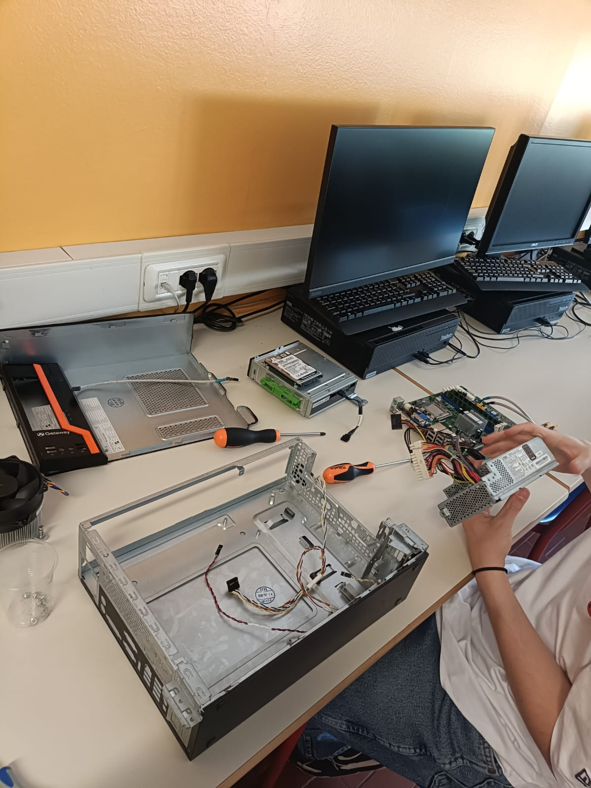
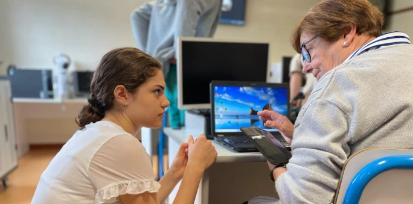

I miei primi progetti e le basi del percorso

Durante l’attività pratica per conoscere le componenti del computer abbiamo avuto l’opportunità di avvicinarci in modo concreto alla struttura interna di un PC fisso. L’esperienza aveva come obiettivo quello di comprendere il funzionamento delle principali parti hardware. In coppia abbiamo aperto un computer, osservando direttamente i vari componenti come scheda madre, RAM, alimentatore e hard disk. Durante la fase di smontaggio abbiamo imparato a riconoscere ogni elemento e a capire il suo ruolo. Successivamente, a ciascuna coppia è stato assegnato un altro computer da rimontare. Abbiamo quindi messo in pratica le conoscenze acquisite nella prima fase. Il lavoro è stato svolto con attenzione e collaborazione, confrontandoci tra compagni, anche i professori ci hanno aiutato fornendo indicazioni e chiarimenti quando necessario.

Questo progetto, organizzato dal comune di Reggio Emilia, si è svolto nell’arco di cinque lezioni, con un incontro a settimana nel pomeriggio. Durante questa esperienza noi studenti abbiamo avuto il ruolo di insegnanti, affiancando gli iscritti nell’apprendimento delle basi dell’informatica. L’obiettivo principale era quello di trasmettere competenze digitali utili nella vita quotidiana. Nel corso degli incontri abbiamo spiegato concetti fondamentali come l’utilizzo della posta elettronica e la navigazione in internet. Abbiamo inoltre mostrato come usare programmi semplici ma importanti, come note e foto. Le spiegazioni sono state accompagnate da esercitazioni pratiche per facilitare la comprensione.
Durante queste attività ho sviluppato competenze tecniche e trasversali significative, acquisendo una conoscenza pratica della struttura interna di un computer e delle sue componenti, nonché la capacità di smontare e rimontare un PC fisso in modo corretto. Parallelamente, grazie all’esperienza di insegnamento, ho potenziato le mie abilità comunicative, imparando a spiegare concetti informatici in modo chiaro e accessibile anche a utenti con poca esperienza, questa attività ci ha anche permesso di sviluppare capacità comunicative e di adattare il linguaggio in base alle persone. Abbiamo imparato ad avere pazienza e a gestire piccoli gruppi di lavoro. Lavorando in coppia e a contatto con i partecipanti, ho sviluppato competenze relazionali e di collaborazione, oltre a capacità di problem solving utili per affrontare e risolvere difficoltà tecniche. Infine, questa esperienza mi ha permesso di maturare prime competenze didattiche, legate alla gestione di attività formative e alla trasmissione efficace delle conoscenze.